Part 12
12.Well. That could have gone better.
Anyways the games not over yet by a long shot. We still havent written our way into someones heart and the game does still offer us that chance. Heres the thing, though. For all of its fantastic writing, there does seem to be certain flaws in the coding. You probably noticed some of it during the discovery of Sayoris body, but the errors, uh
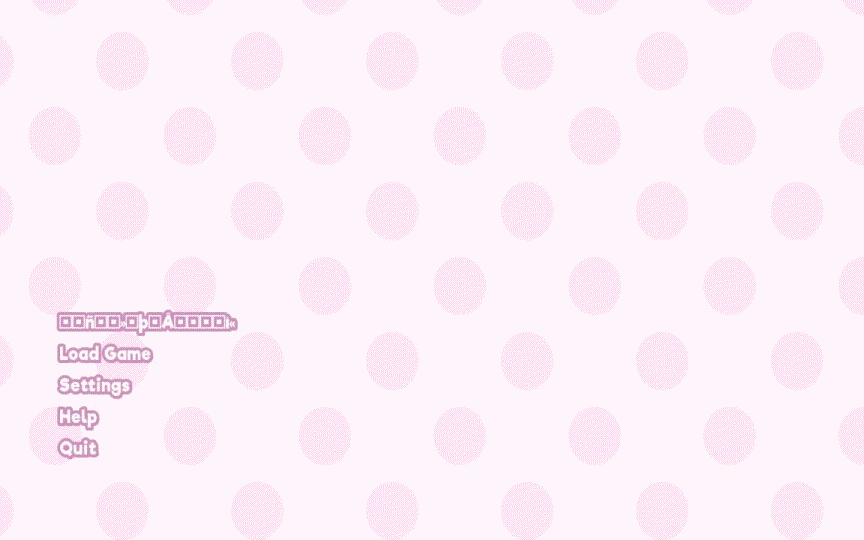
get worse. The top option which used to be New Game is now a jumbled mess. I forgot to get a screenshot, but our save files are still there. Unfortunately, the bizarre way this game handles Sayoris suicide makes them inaccessible:
quote:
Error: Sayori.chr cannot be found.
Beginning a new game.
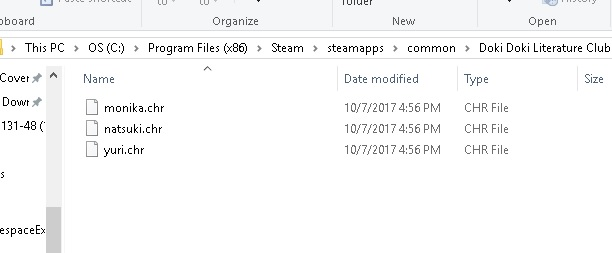
The games not lying auto-deleting her game data is how the dev decided to handle her death. Its weird at best, sloppy at worst. After the error message, all previous save files that contain Sayori are auto-deleted. Reinstalling the game and getting back to this point yields identical results, so I guess were stuck for it. Looks like were startin over, boys!
-----
BGM: Ohayou Sayori!
sort of. The version in-game is a little off-key and slightly distorted. I have no way of accessing it and cant find it on YouTube, but the game files list it as 3g.ogg.
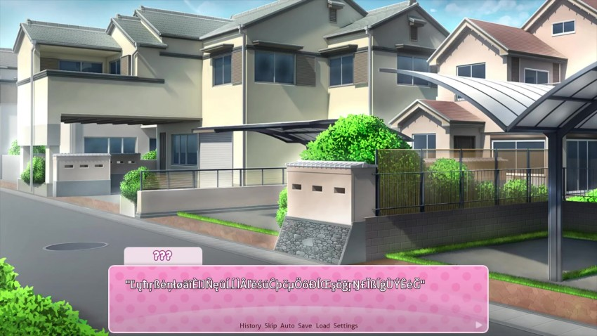
Oh, Lord. This is a complete mess.
I see an annoying girl running toward me from the distance, waving her arms in the air like she's totally oblivious to any attention she might draw to herself.
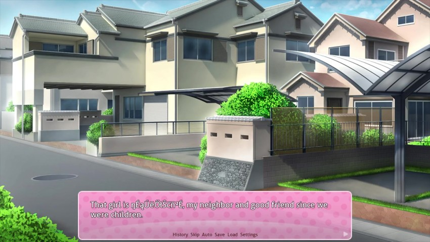
You know, the kind of friend you'd never see yourself making today, but it just kind of works out because you've known each other for so long? We used to walk to school together on days like this, but starting around high school she would oversleep more and more frequently, and I would get tired of waiting up. But if she's going to chase after me like this, I almost feel better off running away.

The game crashes to black, then restarts a second later.
 How did this get through the QA process? Or was there one?
How did this get through the QA process? Or was there one?BGM: Ohayou Sayori!
Mornings are usually the worst, being surrounded by couples and friend groups walking to school together. Meanwhile, I've always walked to school alone. I always tell myself it's about time I meet some girls or something like that...but I have no motivation to join any clubs.
I'm perfectly content just getting by on the average while spending my free time on games and anime. There's always the anime club, but it's not like there would be any girls in it anyway...
ah. So that explains it. Apparently getting the Sayori end changes around the opening and there was still some residual code or whatever left over. I hope this gets patched soon - sorry about that!
-----
BGM: Doki Doki Literature Club! (modified - no "Doki Doki!" at the beginning)
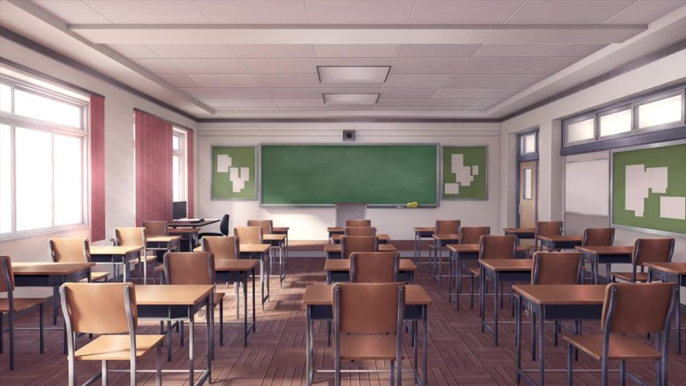
After I pack up my things, I stare blankly at the wall, looking for an ounce of motivation.
 : Clubs..."
: Clubs..."There really aren't any that interest me. Besides, most of them would probably be way too demanding for me to want to deal with. I guess I have no choice but to start with the anime club...
???: ...Mitayo?"

The game is having an, uh, interesting time loading characters.
 : Oh my goodness, I totally didn't expect to see you here! It's been a while, right?": Ah...yeah, it has."
: Oh my goodness, I totally didn't expect to see you here! It's been a while, right?": Ah...yeah, it has."Monika smiles sweetly. We do know each other - well, we rarely talked, but we were in the same class last year. Monika was probably the most popular girl in class - smart, beautiful, athletic. Basically, completely out of my league. So, having her smile at me so genuinely feels a little...
: What did you come in here for, anyway?": Oh, I've just been looking for some supplies to use for my club. Do you know if there's any construction paper in here? Or markers?": I guess you could check the closet....you're in the debate club, right?": Ahaha, about that...": I actually quit the debate club.": Really? You quit?": Yeah...to be honest, I can't stand all of the politics around the major clubs. It feels like nothing but arguing about the budget and publicity and how to prepare for events...I'd much rather take something I personally enjoy and make something special out of it.": In that case, what club did you decide to join?": Actually, I'm starting a new one!" : Literature...?"
: Literature...?"That sounds kind of...dull?
Oh, trust us, Mitayo it has its interesting points.
In case its not obvious, Mitayo has no memories of what happened in our previous run.
: How many members do you have so far?": Um...ahaha...it's kind of embarrassing, but there are only three of us so far. It's really hard to find new members for something that sounds so boring...": Well, I can see that...": But it's really not boring at all, you know! Literature can be anything. Reading, writing, poetry..."But mostly poetry!
: I mean, one of my members even keeps her manga collection in the clubroom...": Wait...really?": Yeah, it's funny, right? She always insists that manga is literature, too. I mean, she's not wrong, I guess...and besides, a member's a member, right?"...Did Monika say "she"? Hmm...
GRILS
 : Hey, Mitayo...by any chance...are you still looking for a club to join?": Ah--I mean, I guess so, but...": In that case...is there any chance you could do me a big favor? I won't ask you to join, but...if you could at the very least visit my club, it would make me really happy. Please?"
: Hey, Mitayo...by any chance...are you still looking for a club to join?": Ah--I mean, I guess so, but...": In that case...is there any chance you could do me a big favor? I won't ask you to join, but...if you could at the very least visit my club, it would make me really happy. Please?"Will there be cupcakes?
: Um..."Well, I guess I have no reason to refuse...besides, how could I ever refuse someone like Monika?
: Sure, I guess I could check it out.": Aah, awesome!"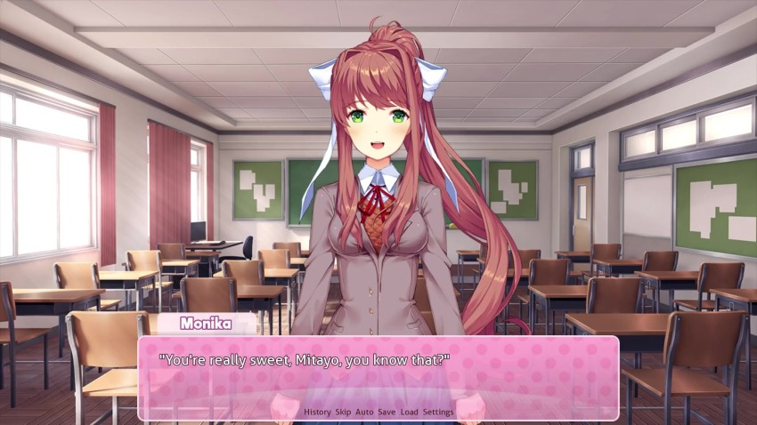
: I-It's nothing, really...": Shall we go, then? I'll look for the materials another time - you're more important."I mean, you could do both, but whatever.
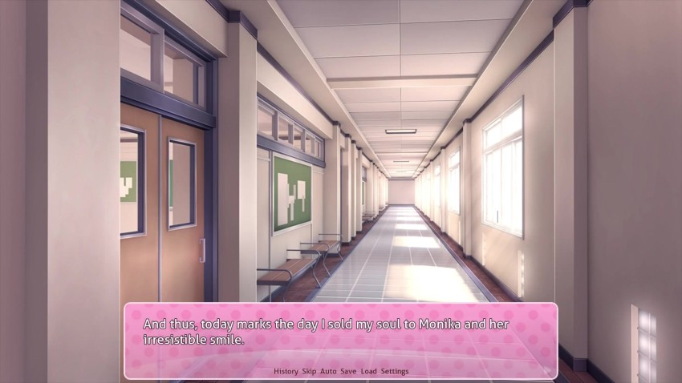
I timidly follow Monika across the school and upstairs - a section of the school I rarely visit, being generally used for third-year classes and activities. Monika, full of energy, swings open the classroom door.
: I'm back~!": And I brought a guest with me!"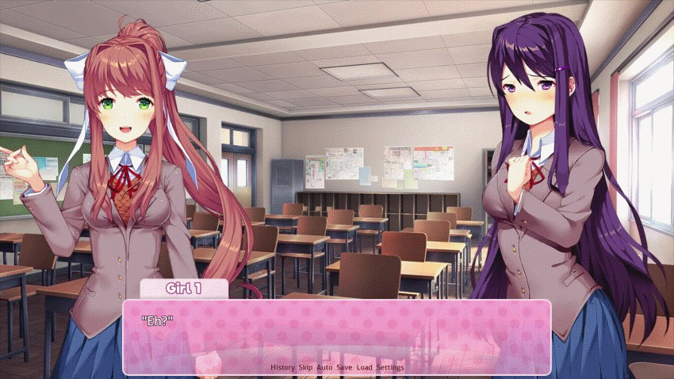
 : Seriously? You brought a boy? Way to kill the atmosphere.": Don't be mean, Natsuki...But anyway, welcome to the club, Mitayo!": ..."
: Seriously? You brought a boy? Way to kill the atmosphere.": Don't be mean, Natsuki...But anyway, welcome to the club, Mitayo!": ..."All words escape me in this situation. This club...is full of incredibly cute girls!!
Im getting the strangest sense of déjà vu.
: So, let me guess...you're Monika's boyfriend, right?": Wha--no, I'm not!" : "Natsuki..."
: "Natsuki..."The girl with the sour attitude, whose name is apparently Natsuki, is one I don't recognize. Her small figure makes me think she's probably a first-year.
: A-Anyway, this is Natsuki, energetic as usual...and this is Yuri, the Vice President!": I-It's nice to meet you..."Yuri, who appears comparably more mature and timid, seems to have a hard time keeping up with someone like Natsuki.
: Yeah... It's nice to meet both of you.": So, I ran into Mitayo in a classroom, and he decided to come check out the club. Isn't that great?"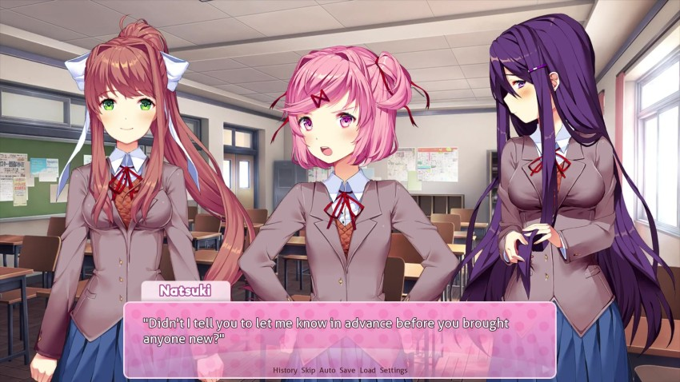
I presume the end of this is make cupcakes.
: Sorry, sorry! I didn't forget that, but I just happened to run into him.": "In that case, I should at least make some tea, right?": Yeah, that would be great! Why don't you come sit down, Mitayo?"The girls have a few desks arranged to form a table. Yuri walks to the corner of the room and opens the closet. Meanwhile, Monika and Natsuki sit across from each other. Still feeling awkward, I take a seat next to Monika.
: So, I know you didn't really plan on coming here...": But we'll make sure you feel right at home, okay? As president of the Literature Club, it's my duty to make the club fun and exciting for everyone!": I'm surprised there aren't more people in the club yet. It must be hard to start a new club.": You could put it that way."We used to have more members, but we just cant seem to hang onto them for very long
: Not many people are very interested in putting out all the effort to start something brand new...especially when it's something that doesn't grab your attention, like literature. You have to work hard to convince people that you're both fun and worthwhile. But it makes school events, like the festival, that much more important. I'm confident that we can all really grow this club before we graduate!": Right, Natsuki?": Well...": ...I guess."Thats the spirit!
Natsuki reluctantly agrees. Such different girls, all interested in the same goal...Monika must have worked really hard just to find these two. Yuri returns to the table, carrying a tea set. She carefully places a teacup in front of each of us before setting down the teapot in the middle.
: You keep a whole tea set in this classroom?": Don't worry, the teachers gave us permission. After all, doesn't a hot cup of tea help you enjoy a good book?"Many of the early scenes are nearly identical.
Nearly.
: Ah...I-I guess..."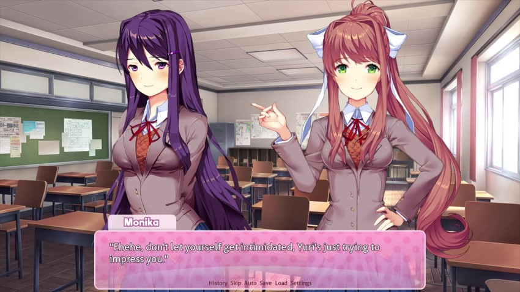
: Eh?! T-That's not..."Insulted, Yuri looks away.
: I meant that, you know...": I believe you. Well, tea and reading might not be a pastime for me, but I at least enjoy tea.: I'm glad..."Yuri faintly smiles to herself in relief.
: So, Mitayo, what kinds of things do you like to read?": Well...ah..."Considering how little I've read these past few years, I don't really have a good way of answering that.
: ...Manga..."I mutter quietly to myself, half-joking. Natsuki's head suddenly perks up - it looks like she wants to say something, but she keeps quiet.
: N-not much of a reader, I guess...": ...Well, that can change..."What am I saying? I spoke without thinking after seeing Yuri's sad smile.
: Anyway, what about you, Yuri?": Well, let's see..."Yuri traces the rim of her teacup with her finger.
: My favorites are usually novels that build deep and complex fantasy worlds. The level of creativity and craftsmanship behind them is amazing to me. And telling a good story in such a foreign world is equally impressive."Yuri goes on, clearly passionate about her reading. She seemed so reserved and timid since the moment I walked in, but it's obvious by the way her eyes light up that she finds her comfort in the world of books, not people.
: But you know, I like a lot of things. Stories with deep psychological elements usually immerse me as well. Isn't it amazing how a writer can so deliberately take advantage of your own lack of imagination to completely throw for you a loop? Anyway, I've been reading a lot of horror lately...": Ah, I read a horror book once..."I desperately grasp something I can relate to at the minimal level. At this rate, Yuri might as well be having a conversation with a rock.
 : It suits your personality."
: It suits your personality."theres something off about this.
: Oh, is that so? Really, if a story makes me think, or takes me to another world, then I really can't put it down. Surreal horror is often very successful at changing the way you look at the world, if only for a brief moment."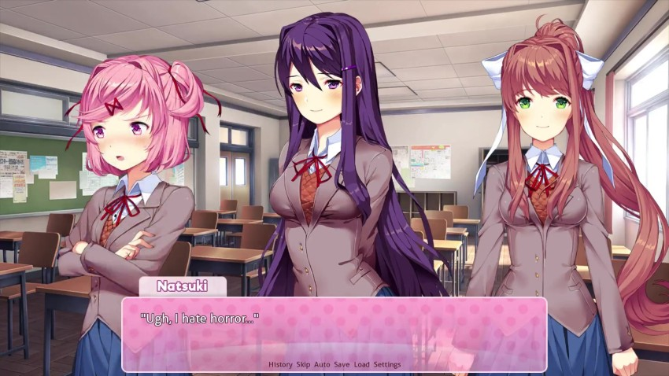
: Oh? Why's that?": Well, I just..."Natsuki's eyes dart over to me for a split second.
: Never mind.": That's right, you usually like to write about cute things, don't you, Natsuki?": W-What? What gives you that idea?": You left a piece of scrap paper behind last club meeting. It looked like you were working on a poem called-": Don't say it out loud! And give that back!": Fine, fine~": Natsuki, you write your own poems?": Eh? Well, I guess sometimes. Why do you care?": I think that's impressive. Why don't you share them sometime?": N-No!"Natsuki averts her eyes.
: You wouldn't...like them...": Ah...not a very confident writer yet?": I understand how Natsuki feels. Sharing that level of writing takes more than just confidence. The truest form of writing is writing to oneself. You must be willing to open up to your readers, exposing your vulnerabilities and showing even the deepest reaches of your heart.": Do you have writing experience too, Yuri? Maybe if you share some of your work, you can set an example and help Natsuki feel comfortable enough to share hers.":
!: I guess it's the same for Yuri..."We all sit in silence for a moment.
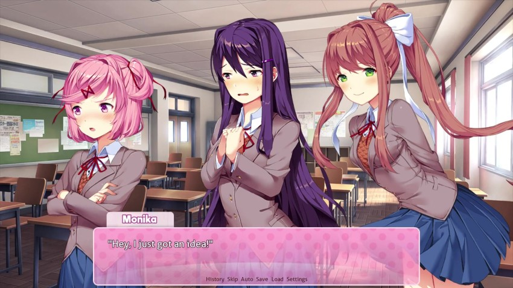
: How about this?" : ...?"Natsuki and Yuri look quizzically at Monika.
: Let's all go home and write a poem of our own! Then, next time we meet, we'll all share them with each other. That way, everyone is even!"This didnt go so well last time, but Mitayo doesnt remember that.
: U-Um...": ...": Ah...I mean, I thought it was a good idea...": Well...I think you're right, Monika. We should probably start finding activities for all of us to participate in together. I did decide to take on the responsibility of Vice President, after all...I need to do my best to nurture the club as well as its members."Now that Yuri is vice president, shes apparently taking the role seriously. This is an interesting shift of her character she was never quite so gung-ho throughout our last run.
: Besides, now that we have a new member...it seems like a good step for us to take. Do you agree as well, Mitayo?": Hold on...there's still one problem.": Eh? What's that?"Now that we've reached the most important topic, I bluntly come forth with what's been on my mind the entire time.
: I never said I would join this club! Monika may have convinced me to stop by, but I never made any decision. I still have other clubs to look at, and...um..."You dont even have cupcakes!
I lose my train of thought. All three girls stare back at me with dejected eyes.
: B-But...": I'm sorry, I thought...": Hmph.": Eh...?"The girls exchange glances before Monika turns back to me.
: I...guess I need to tell you the truth, Mitayo. The thing is..."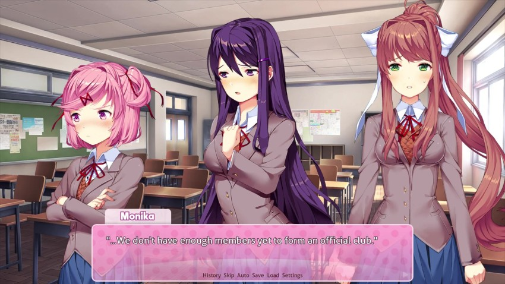
: We need four...and I've been trying really, really hard to find new members. And if we don't find one more before the festival..."[/i]: ..."I...I'm defenseless against these girls. How am I supposed to make a clear-headed decision when it's like this? I would feel terrible for letting everyone down in this situation...and besides, the club itself seems pretty relaxed...so, if writing poems is the price I need to pay in order to spend every day with these beautiful girls...
: ...Right. Okay, I've decided, then. I'll join the Literature Club."One by one, the girls' eyes light up.
: Oh my goodness, really? Do you really mean that, Mitayo?": Yeah...it could be fun, right?": You really did scare me for a moment...": I mean, if you really just left after all this, I would be super pissed.": Mitayo, I'm so happy...we can become an official club now! Thank you so much for this. You're really amazing. I'll do everything I can to give you a great time, okay?"Can you promise me that no one will die? That was kind of a bummer last time.
: Ah...thanks, I guess.": Okay, everyone! I think with that, we can officially end today's meeting on a good note. Everyone remember tonight's assignment: write a poem to bring to the next meeting, so we can all share!"Monika looks over at me once more.
: Mitayo, I look forward to seeing how you express yourself. Ehehe~": Y-Yeah..."Can I really impress the class star Monika with my mediocre writing skills? I already feel the anxiety welling up inside me. Meanwhile, the girls continue to chit-chat as Yuri cleans up the tea set.
: I guess I'll be on my way, then...": Okay! I'll see you tomorrow, then. I can't wait!"With that, I depart the clubroom and make my way home. The whole way, my mind wanders back and forth between the three girls:
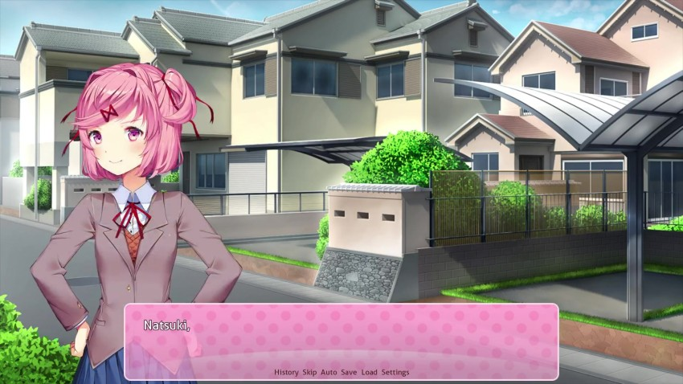
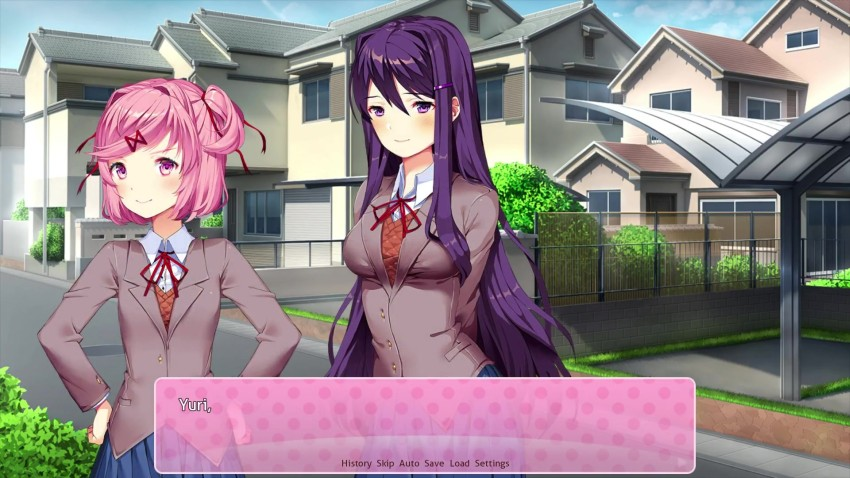
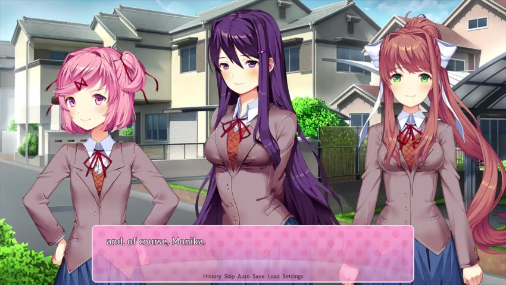
Will I really be happy spending every day after school in a literature club? Perhaps I'll have the chance to grow closer to one of these girls...alright! I'll just need to make the most of my circumstances, and I'm sure good fortune will find me. And I guess that starts with writing a poem tonight...
That last picture seems incomplete.

BGM: Music fades out.
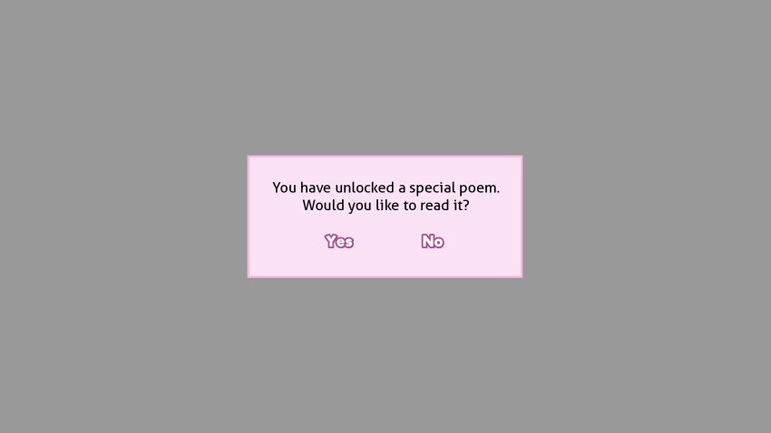
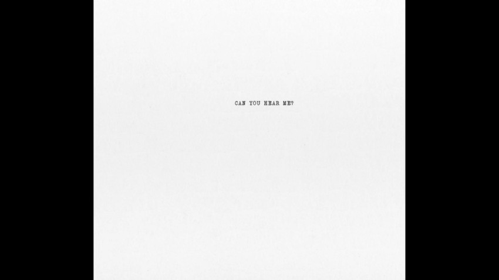
Well, this is new. At the end of each chapter, we unlock a special poem. There are quite a few of them in the game more than there are actual scenes to view them in. Anything the game doesnt show us will be covered in a post-game update.
BGM: Dreams Of Love and Literature

Alright, boyos, VOTE TIME. Before you vote, there are three things to keep in mind:
1) There WILL be differences from last time regardless of what we choose some of them more prominent than others.
2) We have not seen the resolution to Yuris path.
3) We will cover any scenes not picked within the LP after the endgame.
With those caveats in mind which group of poems would you like to go with? Group A, Group B, or Group C? Double votes for haikus. I realize that weve done haikus but theyre the only poems I like so if you dont like it dont write one, okay?

quote:
GROUP A
Happiness, sadness, death, tragedy, alone, love, adventure, sweet, excitement, fireworks, romance, tears, depression, heart, marriage, passion, childhood, fun, color, hope, friends, family, party, vacation, lazy, daydream, pain, holiday, bed, feather, shame, fear, warm, flower, comfort, dance, sing, cry, laugh, dark, sunny, raincloud, calm, silly, flying, wonderful, unrequited, rose, together, promise, charm, beauty, cheer, smile, broken, precious, prayer, clumsy, forgive, nature, ocean, dazzle, special, music, lucky, misfortune, loud, peaceful, joy, sunset, fireflies, rainbow, hurt, play, sparkle, scars, empty, amazing, grief, embrace, extraordinary, awesome, defeat, hopeless, misery, treasure, bliss, memories
GROUP B
Cute, fluffy, pure, candy, shopping, puppy, kitty, clouds, lipstick, parfait, strawberry, pink, chocolate, heartbeat, kiss, melody, ribbon, jumpy, doki-doki, kawaii, skirt, cheeks, email, sticky, bouncy, shiny, nibble, fantasy, sugar, giggle, marshmallow, hop, skipping, peace, spinning, twirl, lollipop, poof, bubbles, whisper, summer, waterfall, swimsuit, vanilla, headphones, games, socks, hair, playground, nightgown, blanket, milk, pout, anger, papa, valentine, mouse, whistle, boop, bunny, anime, jump
GROUP C
Determination, suicide, imagination, secretive, vitality, existence, effulgent, crimson, whirlwind, afterimage, vertigo, disoriented, essence, ambient, starscape, disarray, contamination, intellectual, analysis, entropy, vivacious, uncanny, incongruent, wrath, heavensent, massacre, philosophy, fickle, tenacious, aura, unstable, inferno, incapable, destiny, infallible, agonizing, variance, uncontrollable, extreme, flee, dream, disaster, vivid, vibrant, question, fester, judgment, cage, explode, pleasure, lust, sensation, climax, electricity, disown, despise, infinite, eternity, time, universe, unending, raindrops, covet, unrestrained, landscape, portrait, journey, meager, anxiety, frightening, horror, melancholy, insight, atone, breathe, captive, desire, graveyard
If you want to hear poem laugh and the other new additions, check out the unedited raw footage. Definitely not required but for a little extra context.